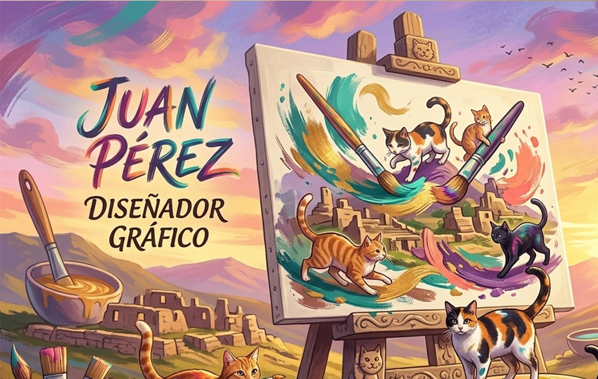
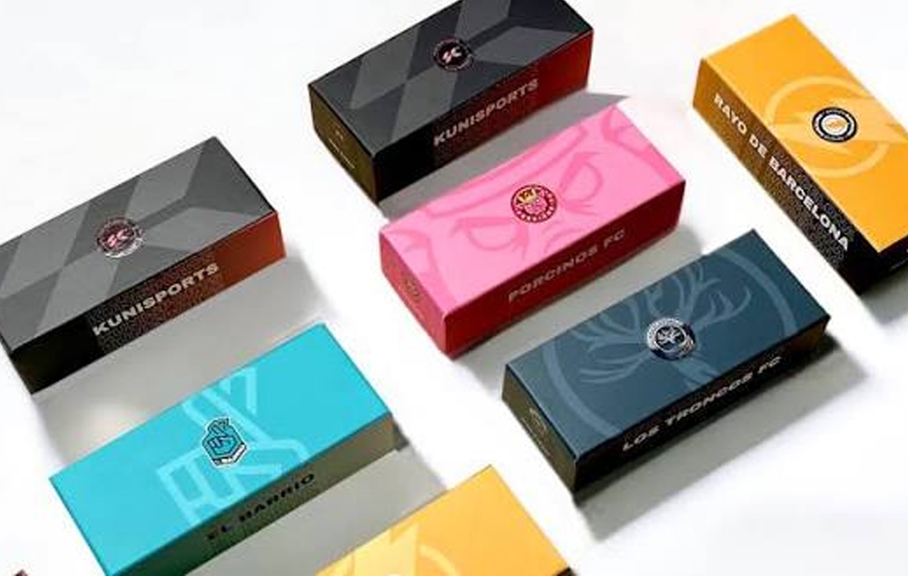
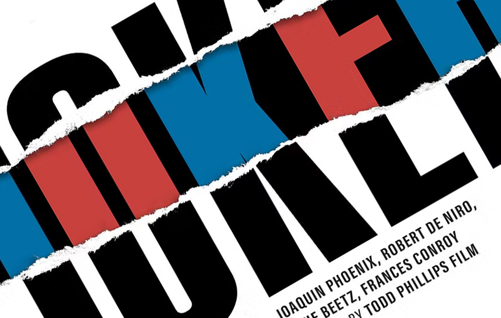
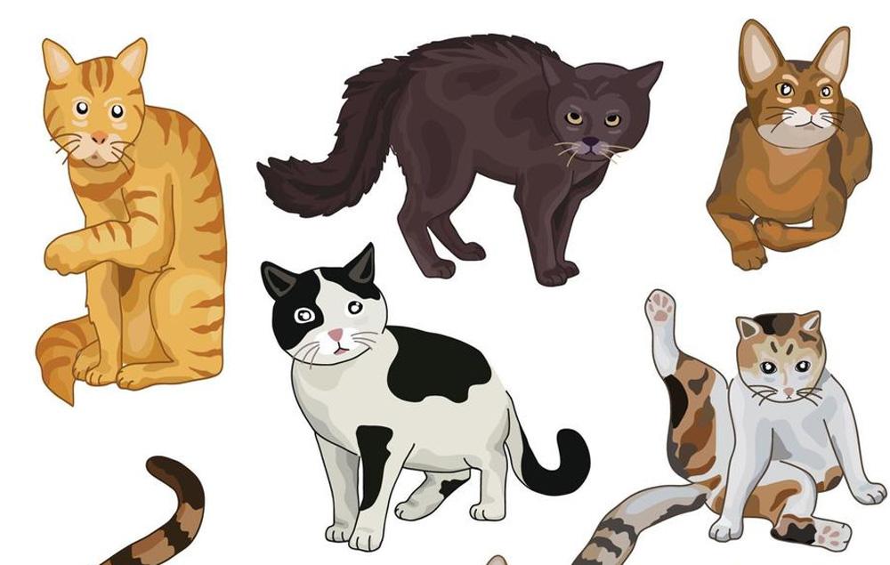

Juan Pérez

Juan Pérez
Estudiante de 7° Semestre en Diseño Gráfico
Santa Cruz, Bolivia
Apasionado por el Branding, UX/UI, Editorial y Diseño Digital. Me gusta crear experiencias visuales modernas centradas en el usuario.
3
Proyectos340
Likes85
Seguidores24
SiguiendoEspecialidades
Branding
UI/UX
Editorial
Packaging
Ilustración
Software
Photoshop
Figma
Illustrator
In Design
After Effects

Realizar Packaging Minimalista
Poster Tipográfico Joker
Ilustración de Gatos